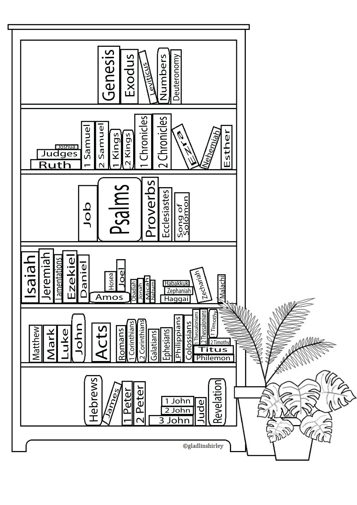
Bible Bookshelf
A simple bookshelf tracker for reading through the books of the Bible.
View PDFThoughtfully designed Bible reading trackers and printables in English and Tamil, made to encourage time spent in God's Word.
I created these Bible trackers to make keeping track of Bible reading simple, beautiful, and enjoyable.
Each design has been thoughtfully illustrated with plants and flowers inspired by Scripture and includes the potted plants of Fig, Grapevine, Lily, Rose of Sharon, Olive, Passion flower and Palm. The Monstera is added for visual appeal.
Similarly, spaces have been provided for you to add your favourite things. It can be a photo frame, globe or your action figures.
Just colour them as you finish each book and finally you can get a colourful tracker which proudly showcases your commitment to God's Word. The tracker can be used monthly or yearly, or however you wish.
As a creator, I love having the flexibility and designed it as such.
Do mention me when you post on social media so that I can happily enjoy your renditions.
I hope these printables become a small companion on your journey through God's Word.
Choose the design you love.

A simple bookshelf tracker for reading through the books of the Bible.
View PDF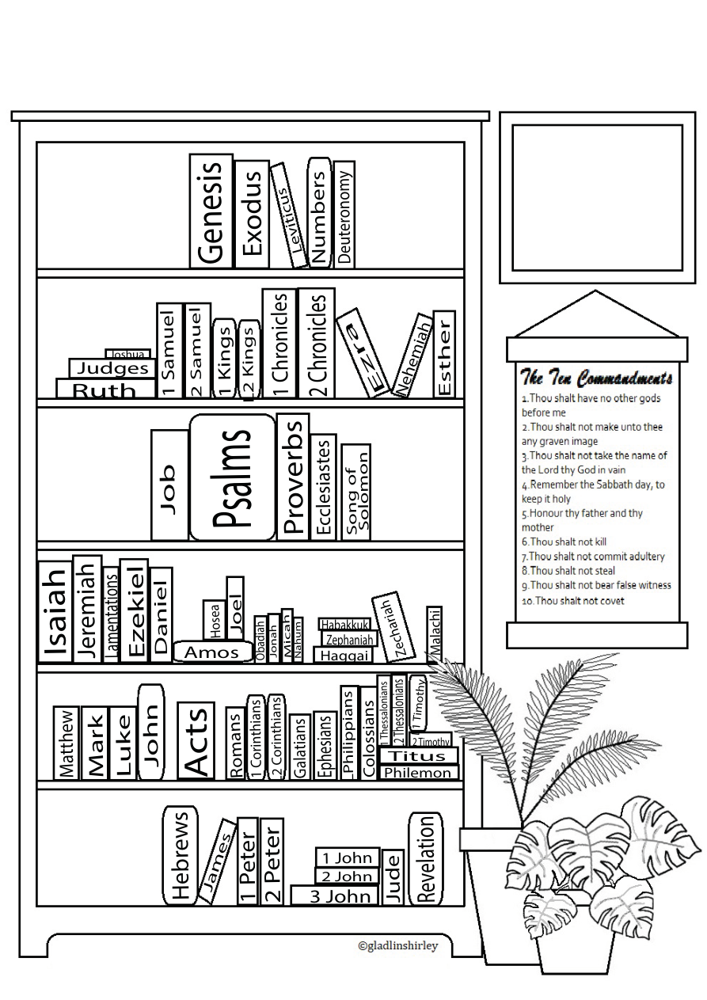
A bookshelf tracker with the Ten Commandments.
View PDF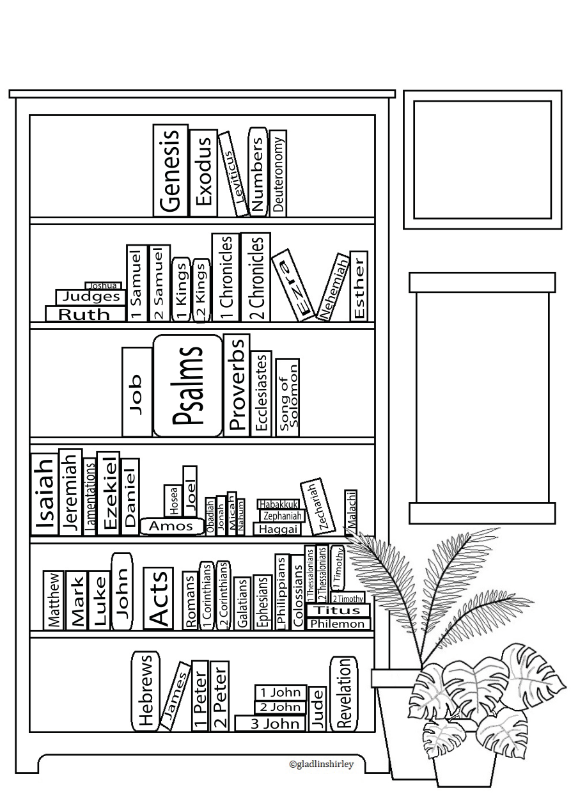
A decorative bookshelf design with a photo-frame element.
View PDF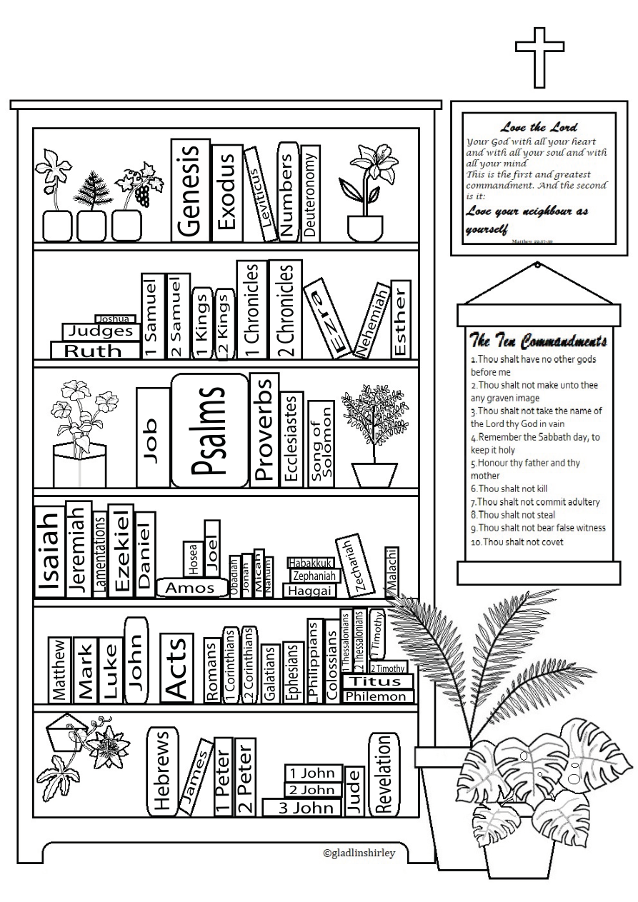
A bookshelf design featuring a Bible verse and the Ten Commandments.
View PDFதமிழ் வேதாகம வாசிப்பு டிராக்கர்கள்
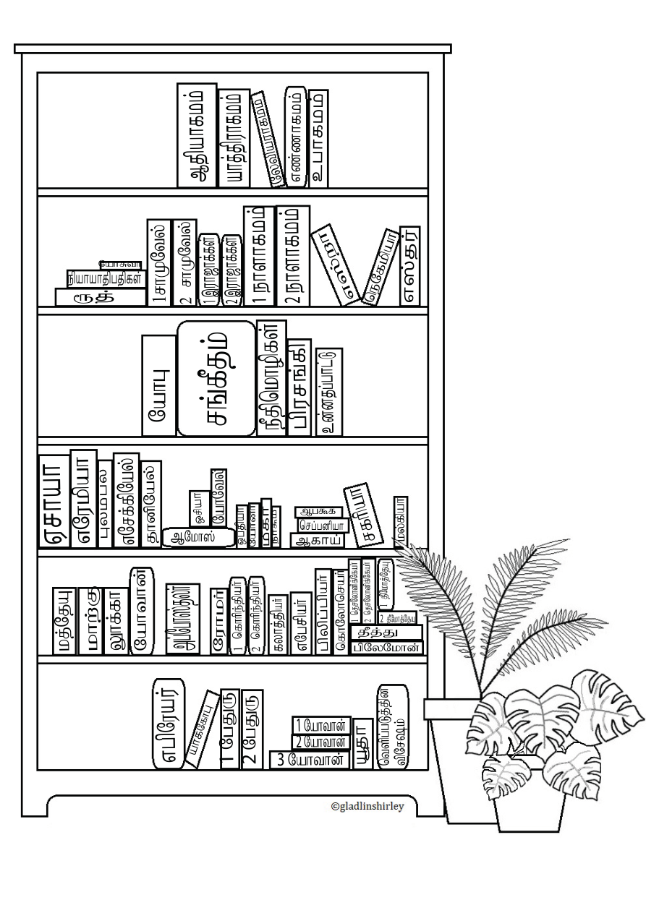
தமிழில் வேதாகமத்தின் புத்தகங்களை வாசித்து குறிக்க உதவும் tracker.
PDF பார்க்க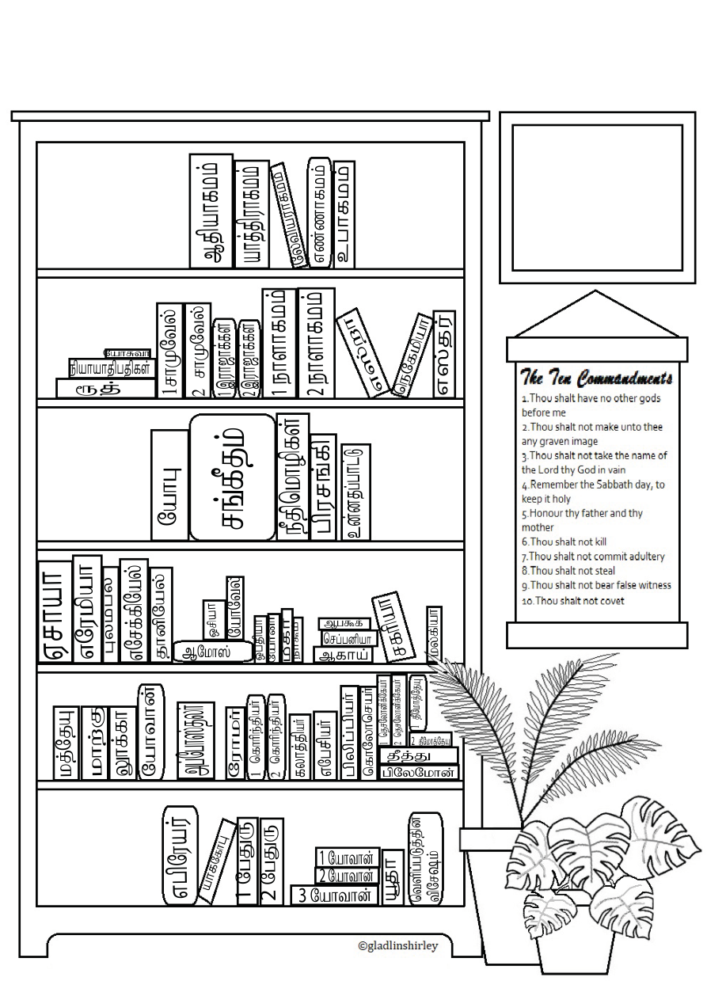
வேதாகம புத்தகங்களுடன் பத்து கட்டளைகளையும் கொண்ட வடிவம்.
PDF பார்க்க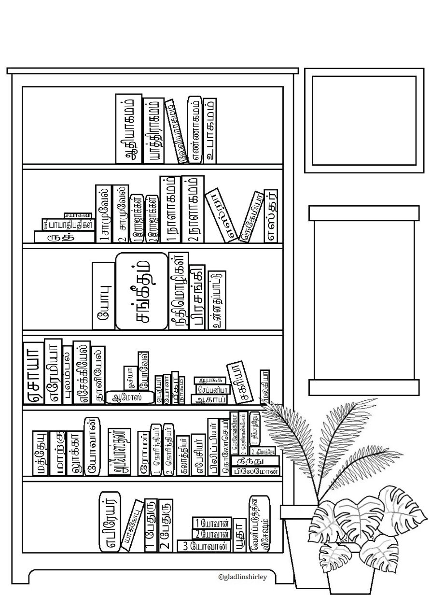
புத்தகப் பெயருடன் photo-frame வடிவமைப்பு.
PDF பார்க்க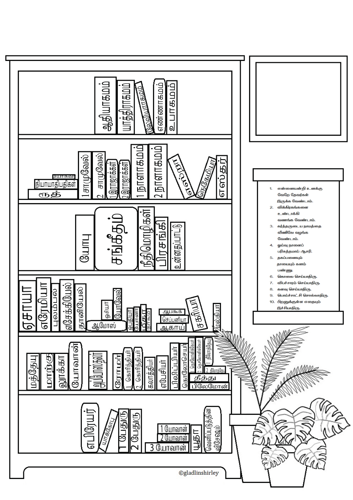
Photo-frame வடிவத்துடன் பத்து கட்டளைகளும் கொண்ட பதிப்பு.
PDF பார்க்க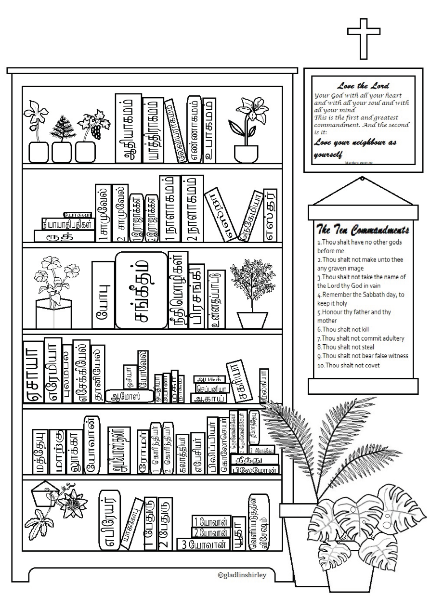
வேதாகம வசனம் மற்றும் பத்து கட்டளைகளுடன் கூடிய பதிப்பு.
PDF பார்க்க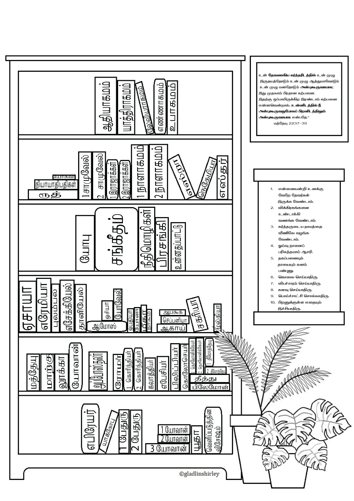
தமிழ் வடிவில் வசனம் மற்றும் கட்டளைகளுடன் கூடிய பதிப்பு.
PDF பார்க்க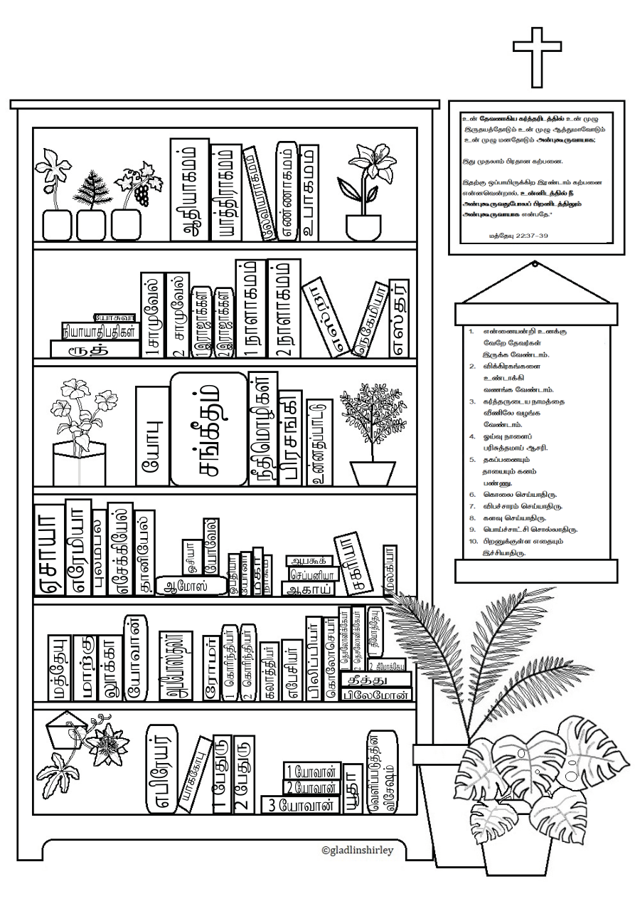
வசனம், தாவர அலங்காரம் மற்றும் பத்து கட்டளைகளுடன் கூடிய இறுதி வடிவம்.
PDF பார்க்கFor the books in your own reading journey.
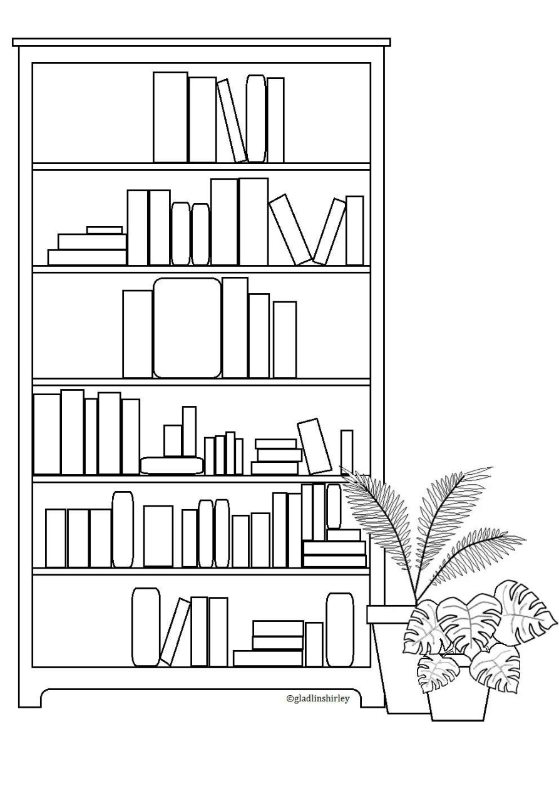
A customizable bookshelf where you can write your own book names. Use it for the books you are reading or for other books in your personal library.
View PDF